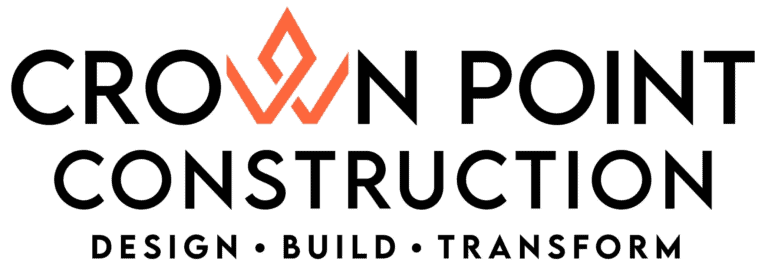

Crown Point Construction · Logo proposal
Two directions for the Crown Point logo
Both options keep the orange crown and the name, and fix two things in the current logo: the name now reads in full as CROWN POINT, and the horizontal layout fits a website header. Each one comes with a symbol that works on its own.
Current logo and the two options


Option 1 · Badge
Crown inside an orange square- Home
- Services
- Projects
- About
- Strong and recognizable at any size, even very small.
- The square gives the brand a stand-alone icon.
- Solid and grounded: a "built" look for a construction company.
Option 2 · Crown
A larger, free-standing crown
- Home
- Services
- Projects
- About
- Lighter and more elegant, and the closest to the current logo.
- The crown leads: a clear evolution of what the brand already has.
- Best on clean backgrounds; lighter than the badge at very small sizes.
Colors
Crown Orange
#FD673DInk Black
#0B0B0BWarm Gray
#7A7672White
#FFFFFF